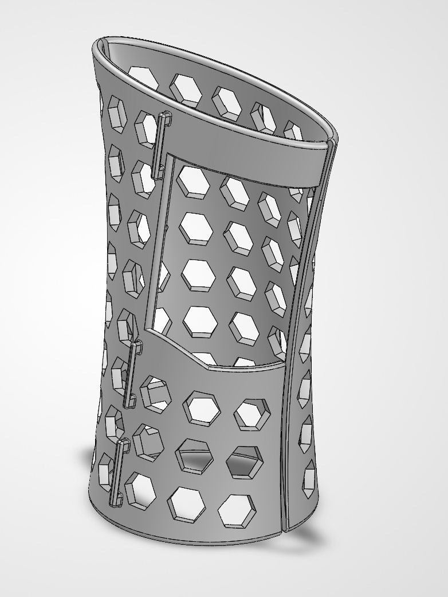
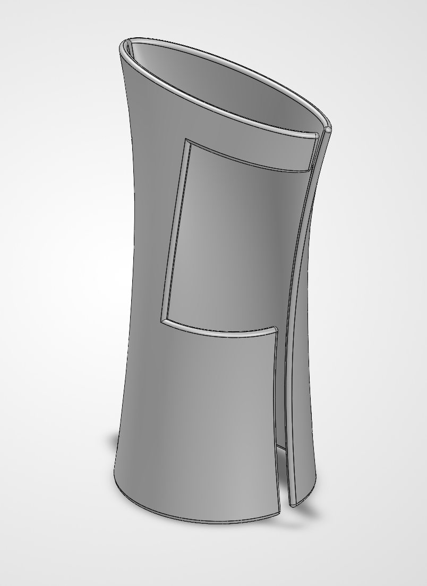
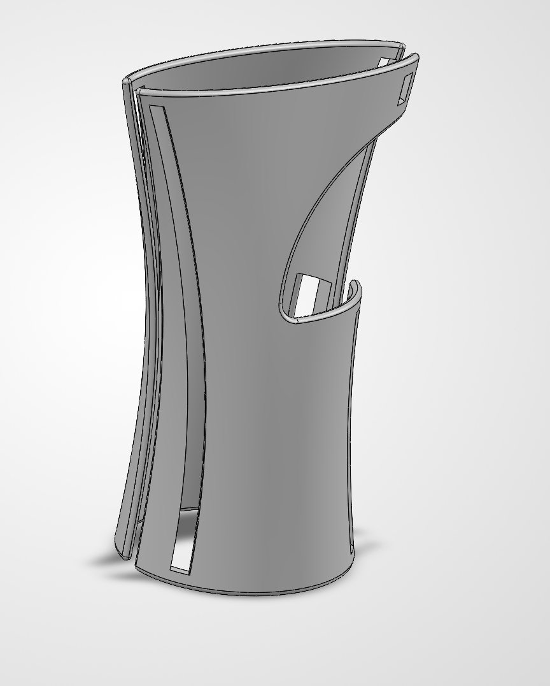
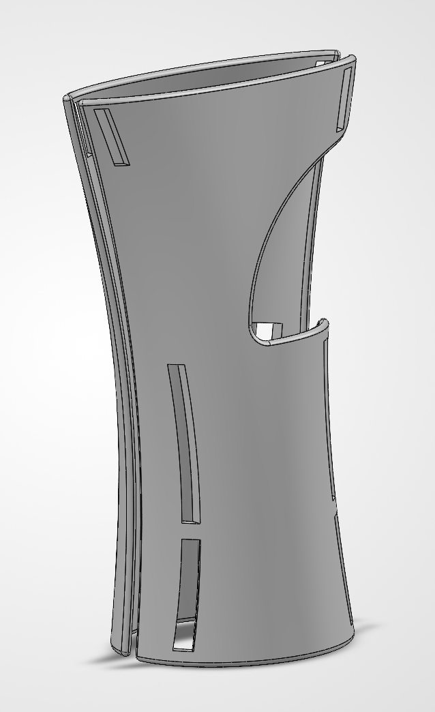
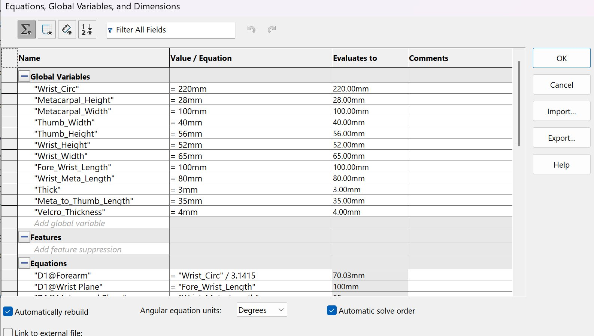
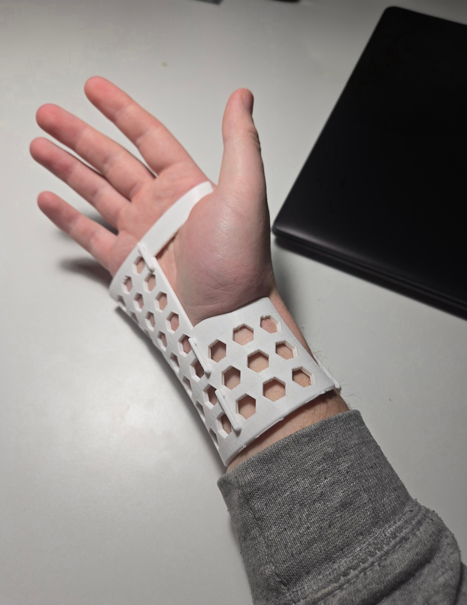
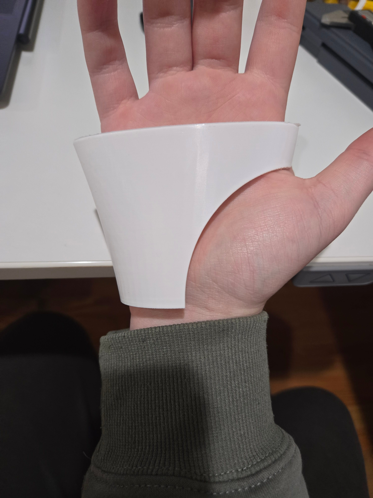
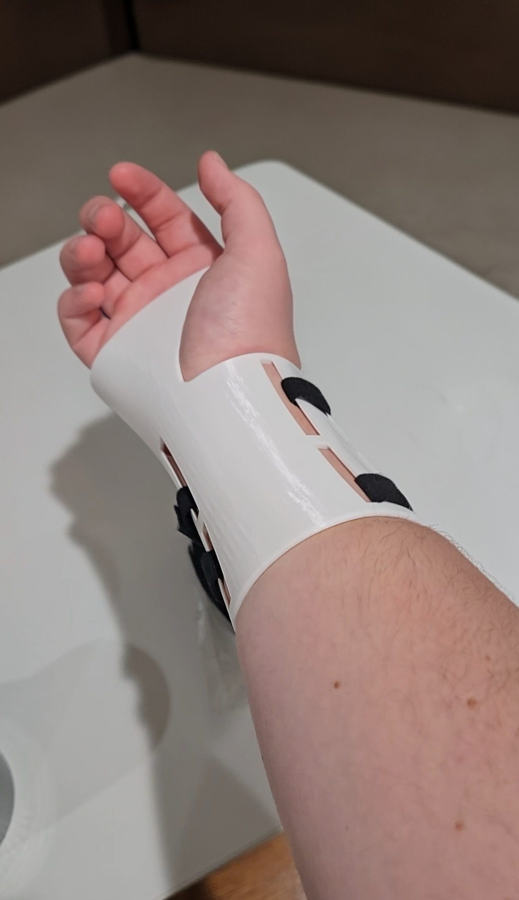

Case Study
Building a faster path from hand measurements to a printable brace.
BraceForge started as a way to make custom wrist brace design more repeatable, easier to revise, and practical to manufacture with desktop 3D printing.
The Problem
Traditional custom orthotics can be slow and expensive to produce because every change often requires manual modeling, repeated CAD edits, and a separate review before manufacturing. A small fit issue around the wrist, palm, thumb opening, or strap placement can turn into another full iteration.
My original goal was to make something simpler: a print-and-use brace that could hold the hand through the strength of the plastic alone. I wanted to avoid straps, assembly, and extra hardware. That first idea exposed the real problem. A brace can look clean in CAD and still be difficult to put on, uncomfortable to wear, hard to ventilate, and nearly impossible to reuse across different hand sizes without rebuilding the model.
BraceForge grew out of that gap between a static CAD model and a useful custom device. The project became less about making one brace and more about building a repeatable system: enter measurements, preview the geometry visually, adjust the fit, and export a printable model.
Iteration Process
The design went through seven SolidWorks versions before becoming the model used for the website. Each version answered one fit or manufacturability problem and created the next one to solve.
Before BraceForge, adjustments happened inside SolidWorks parameters. That worked for experimentation, but it was difficult to understand visually and not practical for someone who just wanted to change a brace size and see the result.





Failure And Learning
The biggest lessons came from fit testing. The early strapless idea was too hard to wear comfortably. The oversized thumb opening solved one clearance problem but weakened the top of the brace. Removing holes improved strength but made the inside feel warmer, so ventilation had to come back in a more controlled way.
The current website version reflects those tradeoffs. The thumb opening is measurement-driven, the brace is split into two printable halves, Velcro slots are divided into shorter cutouts, and breathability uses controlled hex holes so the pattern can avoid rims, split edges, thumb cutouts, and strap areas.



Outcome
BraceForge turns the brace into an adjustable system: measure, preview, refine, estimate material, and export. The project is still a design and fabrication tool rather than medical guidance, but it shows how parametric modeling can shorten the path from an orthotic idea to a printable prototype.